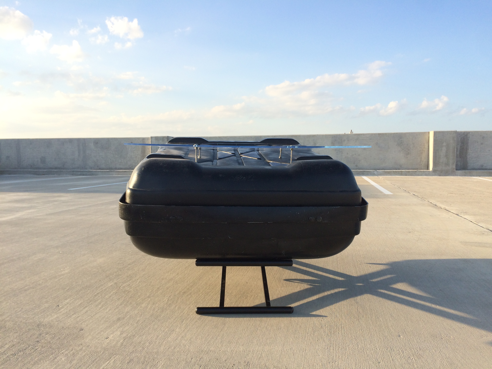

In 2015, I moved from New York to Texas. My father and I drove across the country in a Volkswagen, stuffed with all of my worldly possessions. Strapped on top of the car was a cartop carrier. As the journey progressed, we pondered what I should do with the cartop carrier after moving. My father joked that, knowing me, I would probably turn it into a coffee table.
He knows me well. A few weeks after flying back to New York, my father received a picture of a fully furnished apartment, complete with a cartop coffee table.
Cartop coffee table is designed for the modern bachelor. This enterprising young professional may have just moved into a small apartment. Their living room might be the only place where it would be physically possible to store a cartop carrier.
It is a surprisingly functional table. An angled plexiglass tabletop creates a convenient shelf that’s the perfect size for a pile of magazines. The table is sturdy enough to host poker night, and its surface is easy to clean after a potluck dinner.
The price tag on a piece of furniture doesn’t make it valuable. Cartop coffee table was cheap. It got thrown into a dumpster after a year, when I downsized to a smaller apartment. But when I look at pictures of it, I get sentimental. Cartop coffee table is valuable to me because of the memories that I associate with it.
The table reminds me of driving across the country with my dad. It reminds me of a year spent transitioning from a college graduate into an adult. It reminds me of the close friends that I've gotten to know in Texas, and the conversations we had around my favorite table.
